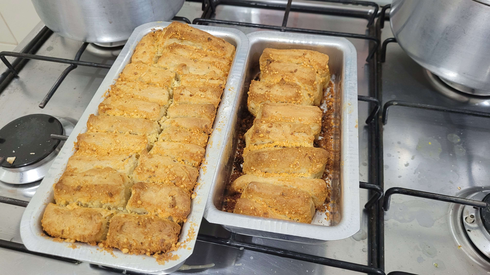

Garlic Bread

Description
A fluffy and garlicky bread to eat on a cold afternoon with a cup of coffee or a stronger drink of your choice.
Ingredients
This recipe is done in multiple parts.
For the Dough, you'll need:
- 1&1/4 cups warm milk (43º);
- 1 packet of active dry yeast;
- 1 tablespoon of sugar;
- 3 tablespoons of extra-virgin olive oil;
- 1&1/2 teaspoons of salt;
- 3&1/4 cups of wheat flour;
- 1 teaspoon of garlic powder;
- 1 teaspoon of dried herbs of your choice;
For the Filling, you'll need:
- 5 tablespoons of butter (softened);
- 1 tablespoon of chopped fresh herbs;
- 2 tablespoons of chopped fresh parsley;
- 1 tablespoon of minced garlic;
- 1/4 teaspoon of salt;
- 1/2 cup of grated Parmesan cheese;
Steps
Preparing the Dough
- Add the warm milk to a large bowl. 1. Combine the active dry yeast and sugar. Let it be for about 5 minutes or until foam;
- Add the olive oil, garlic powder, and dried rosemary (or other dried herbs) and mix well;
- Add the bread flour and salt and use a wooden spoon or rubber spatula to mix until a fluffy dough forms;
- Turn the dough out onto a lightly floured surface and knead for 5 to 10 minutes or until the dough is smooth and elastic. The dough should spring back when gently poked. If the dough seems too wet and sticks excessively to your hands or work surface, gradually add extra flour, about 2 tablespoons at a time, until you get the right consistency;
- When the dough is very elastic, form it into a ball. Drizzle the inside of the bowl with olive oil and place the dough inside, turning to coat with oil;
- Cover the bowl with plastic wrap or a slightly damp dish towel and place it in a warm place in the kitchen. Let the dough rise for about 1 hour or until doubled in size. (If your kitchen is very cold, it may take a little longer. On a very hot day, it may take less time. You should judge it by size, not time.);
The Filling
- Mix all the ingredients and reserve;
Shaping the bread
- After the dough has risen, place it on a lightly floured surface and roll it out into a rectangle approximately 16x9";
- Spread the garlic and herb butter evenly over the dough;
- Then, cut the dough into 12 pieces (approximately 4x3" each);
- Stack the pieces and transfer them to a greased loaf pan;
Final proofing and Baking
- Lightly cover the bread with the same plastic wrap or damp dish towel used previously. Let this bread rise for about 30-45 minutes. It should rise slightly and puff up a little, but don't let it ferment for so long that it doubles in size (it would become too waterproof). During this time, preheat the oven to 180°C and place the rack in the lower center position;
- As soon as the bread looks slightly puffed up, with the dough rising almost to the height of the bread pan, place it in the preheated oven and bake for about 50-55 minutes. Because the dough is quite rich, it tends to brown quickly. If it looks like it's getting too dark, cover it with aluminum foil;
- Carefully remove the bread from the oven and place it on a wire rack to cool;
Let it cool in the pan for about 10 minutes before removing it to serve. It's best enjoyed warm!